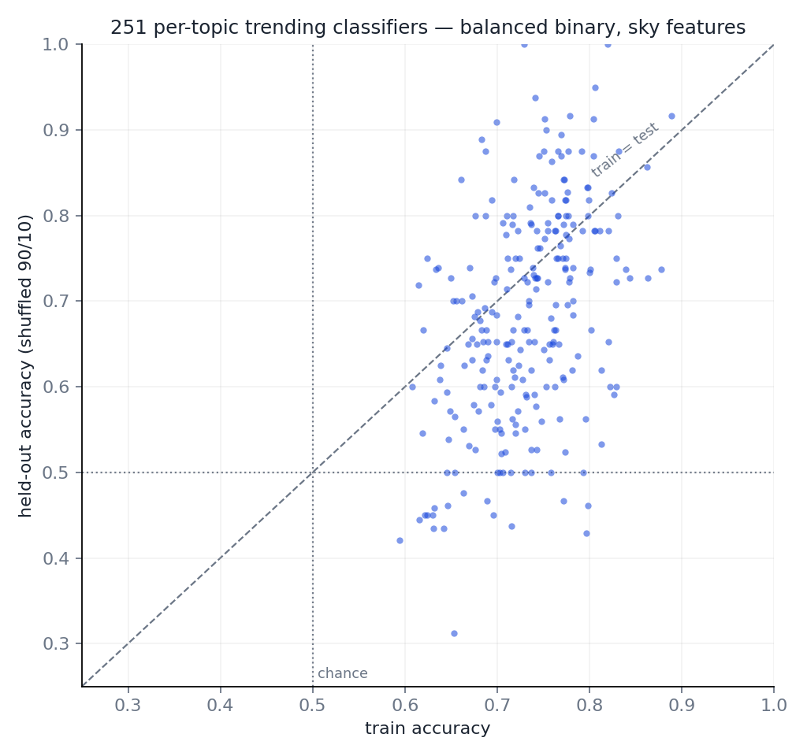

artatopics
The research campaign behind artaquest.com/topics — 251 research fields, models whose only test-time input is the sky, and every negative result on the record. This page is the campaign's own surface, generated from the repository's committed artifacts; the code and every number behind it live in github.com/ArtaQuest/artatopics.
The model of record
One deterministic nine-parameter receiver per field — one shared tuning, seven signed arrows, a closed-form fit with no optimiser and no seed. Honest walls: refit knowing nothing after a cut-off, scored on what actually happened.
Predicting the distribution of topics given the date
Held-out KL(q‖p), mean over twelve origins, lower is better. Nothing yet beats carrying yesterday's distribution forward — and the campaign can say precisely why: the loss is not the bottleneck (CE ≡ KL, measured), the link is not (the convex softmax global optimum LOSES), the phases are not (none / one / seven per topic span 0.0006), and the topic roster is not (restricting to the 192 topics alive since the 1800s does not change the order).
| model | test KL ↓ |
|---|---|
| persistence distribution | 0.0831 |
| per-topic record, renormalised | 0.0853 |
| Born multi-head, one tuning per topic | 0.0880 |
| Born multi-head, free per-body phases | 0.0882 |
| softmax KL — convex, provably global | 0.1104 |
Trending next year — 251 decoupled binary classifiers
Per topic, on its own history: will publication counts rise by more than the topic's own median next year? Balanced 50/50 by construction; logistic regression on sky features; shuffled 90/10 split as specified, with the temporal split reported beside it.
The controls name what was learned — a clock, not a rhythm. Fast planets alone (mars, jupiter — dozens of cycles, no calendar information) score at chance. The slow planets carry everything. A bare linear year beats the whole sky model. Publication counts accelerated secularly, so the balanced label is partly an era label, and the slow bodies' angles encode the era. Every claim below carries that caveat.


Every topic's call for next year
The classifier's current prediction per topic — probability that next year's publication count rises by more than the topic's own median — with its held-out accuracy. An era read, not a planetary one; see the controls above.
| topic | p(trending) | call | held-out acc | years |
|---|---|---|---|---|
| Health Informatics | 100% | yes | 100% | 68 |
| Renewable Energy, Sustainability and the Environment | 98% | yes | 76% | 206 |
| Orthodontics | 96% | yes | 86% | 145 |
| Automotive Engineering | 96% | yes | 78% | 182 |
| Environmental Engineering | 95% | yes | 89% | 192 |
| Metals and Alloys | 93% | yes | 70% | 104 |
| Radiological and Ultrasound Technology | 92% | yes | 75% | 161 |
| Rehabilitation | 92% | yes | 50% | 200 |
| Hematology | 92% | yes | 53% | 154 |
| Human-Computer Interaction | 92% | yes | 60% | 150 |
| Computer Vision and Pattern Recognition | 91% | yes | 87% | 227 |
| Urology | 91% | yes | 70% | 203 |
| Hardware and Architecture | 90% | yes | 73% | 106 |
| Computer Science Applications | 90% | yes | 89% | 182 |
| Process Chemistry and Technology | 88% | yes | 80% | 153 |
| Biomedical Engineering | 88% | yes | 83% | 233 |
| Business and International Management | 88% | yes | 82% | 108 |
| Catalysis | 87% | yes | 68% | 192 |
| Nephrology | 87% | yes | 65% | 200 |
| Management, Monitoring, Policy and Law | 86% | yes | 50% | 239 |
| Pollution | 86% | yes | 79% | 193 |
| Analytical Chemistry | 85% | yes | 55% | 205 |
| Health, Toxicology and Mutagenesis | 85% | yes | 81% | 210 |
| Geriatrics and Gerontology | 84% | yes | 88% | 161 |
| Algebra and Number Theory | 84% | yes | 88% | 160 |
| Discrete Mathematics and Combinatorics | 84% | yes | 47% | 151 |
| General Energy | 84% | yes | 69% | 156 |
| Social Psychology | 84% | yes | 88% | 238 |
| Strategy and Management | 84% | yes | 74% | 233 |
| Forestry | 84% | yes | 45% | 201 |
| Energy Engineering and Power Technology | 84% | yes | 60% | 153 |
| Cognitive Neuroscience | 83% | yes | 73% | 220 |
| Marketing | 82% | yes | 71% | 211 |
| Endocrinology, Diabetes and Metabolism | 82% | yes | 59% | 215 |
| Agronomy and Crop Science | 82% | yes | 53% | 194 |
| Neurology (Neuroscience) | 81% | yes | 70% | 226 |
| Speech and Hearing | 81% | yes | 65% | 226 |
| Emergency Medical Services | 81% | yes | 60% | 199 |
| Linguistics and Language | 81% | yes | 73% | 225 |
| Health | 80% | yes | 70% | 226 |
| Health Information Management | 80% | yes | 63% | 189 |
| Ceramics and Composites | 80% | yes | 73% | 150 |
| Inorganic Chemistry | 79% | yes | 75% | 202 |
| Occupational Therapy | 79% | yes | 74% | 191 |
| Molecular Medicine | 79% | yes | 92% | 120 |
| Complementary and Manual Therapy | 79% | yes | 58% | 192 |
| Mechanical Engineering | 79% | yes | 78% | 228 |
| Orthopedics and Sports Medicine | 78% | yes | 83% | 176 |
| Human Factors and Ergonomics | 78% | yes | 75% | 121 |
| Physical Therapy, Sports Therapy and Rehabilitation | 78% | yes | 62% | 211 |
| Electrochemistry | 78% | yes | 55% | 198 |
| Gender Studies | 77% | yes | 73% | 216 |
| Biophysics | 77% | yes | 65% | 199 |
| Critical Care and Intensive Care Medicine | 77% | yes | 59% | 218 |
| Library and Information Sciences | 76% | yes | 63% | 193 |
| Biomaterials | 76% | yes | 75% | 202 |
| Clinical Psychology | 76% | yes | 65% | 229 |
| Oral Surgery | 75% | yes | 80% | 200 |
| Family Practice | 75% | yes | 67% | 153 |
| Water Science and Technology | 75% | yes | 84% | 189 |
| Polymers and Plastics | 75% | yes | 72% | 179 |
| Radiation | 75% | yes | 68% | 189 |
| Pharmaceutical Science | 74% | yes | 74% | 194 |
| Soil Science | 74% | yes | 84% | 186 |
| Applied Psychology | 74% | yes | 64% | 145 |
| Modeling and Simulation | 74% | yes | 62% | 164 |
| Cultural Studies | 74% | yes | 74% | 229 |
| Paleontology | 74% | yes | 48% | 214 |
| Toxicology | 73% | yes | 71% | 173 |
| Applied Mathematics | 73% | yes | 74% | 187 |
| Management Science and Operations Research | 72% | yes | 74% | 191 |
| Animal Science and Zoology | 72% | yes | 80% | 202 |
| Building and Construction | 71% | yes | 80% | 199 |
| General Health Professions | 71% | yes | 56% | 251 |
| General Agricultural and Biological Sciences | 70% | yes | 55% | 215 |
| Surgery | 70% | yes | 79% | 245 |
| Obstetrics and Gynecology | 70% | yes | 91% | 215 |
| Safety Research | 70% | yes | 65% | 204 |
| Genetics (Medicine) | 69% | yes | 79% | 194 |
| General Social Sciences | 69% | yes | 77% | 215 |
| Nuclear and High Energy Physics | 69% | yes | 79% | 190 |
| Food Science | 69% | yes | 83% | 232 |
| Behavioral Neuroscience | 69% | yes | 55% | 111 |
| Artificial Intelligence | 69% | yes | 78% | 229 |
| Education | 68% | yes | 78% | 229 |
| Biochemistry (Medicine) | 67% | yes | 67% | 151 |
| Geography, Planning and Development | 67% | yes | 78% | 228 |
| Aquatic Science | 67% | yes | 65% | 199 |
| Genetics (Biochemistry, Genetics and Molecular Biology) | 67% | yes | 79% | 236 |
| Cardiology and Cardiovascular Medicine | 67% | yes | 80% | 202 |
| Ocean Engineering | 66% | yes | 87% | 227 |
| Filtration and Separation | 66% | yes | 31% | 160 |
| Geophysics | 66% | yes | 59% | 218 |
| Architecture | 65% | yes | 70% | 203 |
| Experimental and Cognitive Psychology | 65% | yes | 91% | 227 |
| Finance | 65% | yes | 65% | 226 |
| Transplantation | 65% | yes | 54% | 132 |
| Electronic, Optical and Magnetic Materials | 65% | yes | 95% | 200 |
| Fluid Flow and Transfer Processes | 65% | yes | 67% | 185 |
| Ecological Modeling | 65% | yes | 53% | 192 |
| Neuropsychology and Physiological Psychology | 64% | yes | 88% | 163 |
| Management of Technology and Innovation | 64% | yes | 73% | 220 |
| Horticulture | 64% | yes | 46% | 126 |
| Conservation | 64% | yes | 64% | 225 |
| Information Systems and Management | 64% | yes | 72% | 185 |
| Issues, ethics and legal aspects | 63% | yes | 55% | 195 |
| Safety, Risk, Reliability and Quality | 63% | yes | 78% | 183 |
| General Arts and Humanities | 63% | yes | 52% | 226 |
| Emergency Medicine | 63% | yes | 61% | 226 |
| Civil and Structural Engineering | 63% | yes | 61% | 229 |
| Public Health, Environmental and Occupational Health | 62% | yes | 68% | 252 |
| Tourism, Leisure and Hospitality Management | 62% | yes | 44% | 160 |
| General Decision Sciences | 62% | yes | 67% | 181 |
| Museology | 62% | yes | 50% | 263 |
| Developmental Neuroscience | 61% | yes | 80% | 146 |
| Reproductive Medicine | 61% | yes | 61% | 232 |
| Global and Planetary Change | 61% | yes | 83% | 234 |
| Accounting | 60% | yes | 78% | 227 |
| Complementary and alternative medicine | 60% | yes | 71% | 211 |
| Periodontics | 60% | yes | 63% | 189 |
| Visual Arts and Performing Arts | 59% | yes | 50% | 239 |
| Mathematical Physics | 59% | yes | 75% | 199 |
| Ophthalmology | 59% | yes | 82% | 215 |
| Nutrition and Dietetics | 59% | yes | 80% | 203 |
| Classics | 59% | yes | 46% | 241 |
| Biochemistry (Biochemistry, Genetics and Molecular Biology) | 58% | yes | 62% | 212 |
| Developmental Biology | 58% | yes | 67% | 175 |
| Urban Studies | 58% | yes | 86% | 225 |
| Developmental and Educational Psychology | 58% | yes | 60% | 201 |
| Organizational Behavior and Human Resource Management | 58% | yes | 82% | 221 |
| Physiology (Medicine) | 58% | yes | 78% | 230 |
| Clinical Biochemistry | 57% | yes | 65% | 203 |
| Physiology (Biochemistry, Genetics and Molecular Biology) | 57% | yes | 47% | 150 |
| Industrial relations | 57% | yes | 69% | 160 |
| Epidemiology | 57% | yes | 78% | 229 |
| Geology | 56% | yes | 84% | 193 |
| Electrical and Electronic Engineering | 56% | yes | 62% | 213 |
| Sensory Systems | 56% | yes | 94% | 159 |
| Ecology | 56% | yes | 80% | 249 |
| General Psychology | 55% | yes | 60% | 201 |
| Communication | 55% | yes | 53% | 190 |
| Life-span and Life-course Studies | 54% | yes | 69% | 134 |
| Psychiatry and Mental health | 54% | yes | 78% | 226 |
| Cellular and Molecular Neuroscience | 54% | yes | 75% | 202 |
| Instrumentation | 54% | yes | 50% | 156 |
| Endocrinology | 54% | yes | 55% | 219 |
| Industrial and Manufacturing Engineering (Engineering) | 54% | yes | 80% | 199 |
| Virology | 54% | yes | 65% | 201 |
| Bioengineering | 53% | yes | 56% | 158 |
| Neurology (Medicine) | 53% | yes | 65% | 226 |
| Surfaces, Coatings and Films | 53% | yes | 76% | 168 |
| Software | 53% | yes | 83% | 121 |
| Internal Medicine | 53% | yes | 59% | 170 |
| Oncology | 52% | yes | 67% | 207 |
| Fuel Technology | 52% | yes | 44% | 182 |
| Control and Systems Engineering | 52% | yes | 65% | 205 |
| Computational Theory and Mathematics | 52% | yes | 82% | 217 |
| Statistics, Probability and Uncertainty | 51% | yes | 60% | 201 |
| Ecology, Evolution, Behavior and Systematics | 51% | yes | 60% | 250 |
| Aerospace Engineering | 51% | yes | 91% | 232 |
| Nuclear Energy and Engineering | 51% | yes | 67% | 94 |
| Geochemistry and Petrology | 51% | yes | 45% | 205 |
| Pulmonary and Respiratory Medicine | 51% | yes | 74% | 226 |
| Information Systems | 51% | yes | 82% | 216 |
| Small Animals | 51% | yes | 75% | 201 |
| Cell Biology | 51% | yes | 62% | 207 |
| Microbiology (Medicine) | 51% | yes | 57% | 145 |
| Music | 50% | yes | 74% | 229 |
| Dermatology | 50% | yes | 74% | 229 |
| Transportation | 50% | yes | 68% | 220 |
| Gastroenterology | 50% | no | 72% | 183 |
| Law | 49% | no | 73% | 264 |
| Numerical Analysis | 49% | no | 72% | 180 |
| Industrial and Manufacturing Engineering (Environmental Science) | 48% | no | 61% | 184 |
| Religious studies | 48% | no | 60% | 252 |
| Geometry and Topology | 48% | no | 70% | 228 |
| Environmental Chemistry | 47% | no | 70% | 201 |
| Pharmacology (Pharmacology, Toxicology and Pharmaceutics) | 47% | no | 50% | 205 |
| Space and Planetary Science | 47% | no | 45% | 201 |
| Parasitology | 47% | no | 60% | 198 |
| Language and Linguistics | 46% | no | 58% | 262 |
| General Materials Science | 46% | no | 45% | 204 |
| Pharmacy | 46% | no | 68% | 216 |
| Anesthesiology and Pain Medicine | 45% | no | 58% | 191 |
| Biotechnology | 45% | no | 75% | 200 |
| Applied Microbiology and Biotechnology | 45% | no | 64% | 138 |
| Medical Laboratory Technology | 45% | no | 56% | 157 |
| Public Administration | 45% | no | 83% | 183 |
| Structural Biology | 45% | no | 90% | 99 |
| Atmospheric Science | 45% | no | 77% | 220 |
| Nature and Landscape Conservation | 45% | no | 56% | 252 |
| Archeology (Social Sciences) | 44% | no | 61% | 227 |
| Molecular Biology | 43% | no | 88% | 239 |
| Development | 43% | no | 80% | 151 |
| Sociology and Political Science | 43% | no | 83% | 288 |
| Earth-Surface Processes | 43% | no | 55% | 205 |
| General Economics, Econometrics and Finance | 42% | no | 64% | 219 |
| Archeology (Arts and Humanities) | 42% | no | 65% | 310 |
| Spectroscopy | 42% | no | 65% | 226 |
| Computational Mechanics | 41% | no | 79% | 244 |
| Radiology, Nuclear Medicine and Imaging | 41% | no | 78% | 229 |
| Economics and Econometrics | 41% | no | 66% | 325 |
| Rheumatology | 41% | no | 73% | 215 |
| Infectious Diseases | 41% | no | 65% | 227 |
| Biological Psychiatry | 41% | no | 73% | 107 |
| Theoretical Computer Science | 41% | no | 58% | 241 |
| Equine | 41% | no | 74% | 188 |
| Condensed Matter Physics | 40% | no | 46% | 132 |
| Insect Science | 40% | no | 57% | 208 |
| Oceanography | 40% | no | 57% | 228 |
| Atomic and Molecular Physics, and Optics | 40% | no | 65% | 227 |
| Pathology and Forensic Medicine | 38% | no | 87% | 227 |
| Anatomy | 38% | no | 43% | 227 |
| Microbiology (Immunology and Microbiology) | 38% | no | 52% | 213 |
| Anthropology | 38% | no | 50% | 325 |
| Plant Science | 37% | no | 68% | 307 |
| Materials Chemistry | 36% | no | 76% | 208 |
| Demography | 35% | no | 73% | 225 |
| Computer Networks and Communications | 35% | no | 62% | 208 |
| Management Information Systems | 35% | no | 72% | 182 |
| Literature and Literary Theory | 34% | no | 62% | 325 |
| Immunology | 33% | no | 84% | 194 |
| Statistical and Nonlinear Physics | 33% | no | 65% | 228 |
| Otorhinolaryngology | 32% | no | 79% | 188 |
| Computational Mathematics | 32% | no | 50% | 63 |
| Pediatrics, Perinatology and Child Health | 32% | no | 78% | 229 |
| Research and Theory | 32% | no | 67% | 124 |
| History | 31% | no | 72% | 325 |
| Computer Graphics and Computer-Aided Design | 30% | no | 67% | 149 |
| Signal Processing | 30% | no | 56% | 158 |
| Leadership and Management | 29% | no | 92% | 116 |
| Chemical Health and Safety | 29% | no | 62% | 156 |
| Cancer Research | 29% | no | 75% | 201 |
| Acoustics and Ultrasonics | 28% | no | 100% | 66 |
| History and Philosophy of Science | 28% | no | 53% | 325 |
| Medical Terminology | 28% | no | 42% | 189 |
| Hepatology | 27% | no | 50% | 156 |
| Astronomy and Astrophysics | 27% | no | 56% | 266 |
| Physical and Theoretical Chemistry | 27% | no | 43% | 229 |
| Mechanics of Materials | 27% | no | 70% | 199 |
| Immunology and Allergy | 23% | no | 63% | 187 |
| Pharmacology (Medicine) | 23% | no | 52% | 211 |
| Political Science and International Relations | 22% | no | 59% | 325 |
| Organic Chemistry | 21% | no | 73% | 219 |
| Endocrine and Autonomic Systems | 21% | no | 88% | 156 |
| General Dentistry | 20% | no | 57% | 145 |
| Media Technology | 17% | no | 61% | 178 |
| Philosophy | 15% | no | 59% | 325 |
| Statistics and Probability | 14% | no | 74% | 190 |
| Aging | 12% | no | 50% | 123 |
| General Engineering | 6% | no | 43% | 71 |
What this is and is not
Every number here is the output of a committed, deterministic script run behind honest walls, and the repository records the failures beside the wins. No causal claim is made or implied. The sky is a basis of slow, perfectly forecastable oscillators; where it has skill, the controls say what kind of skill it is.